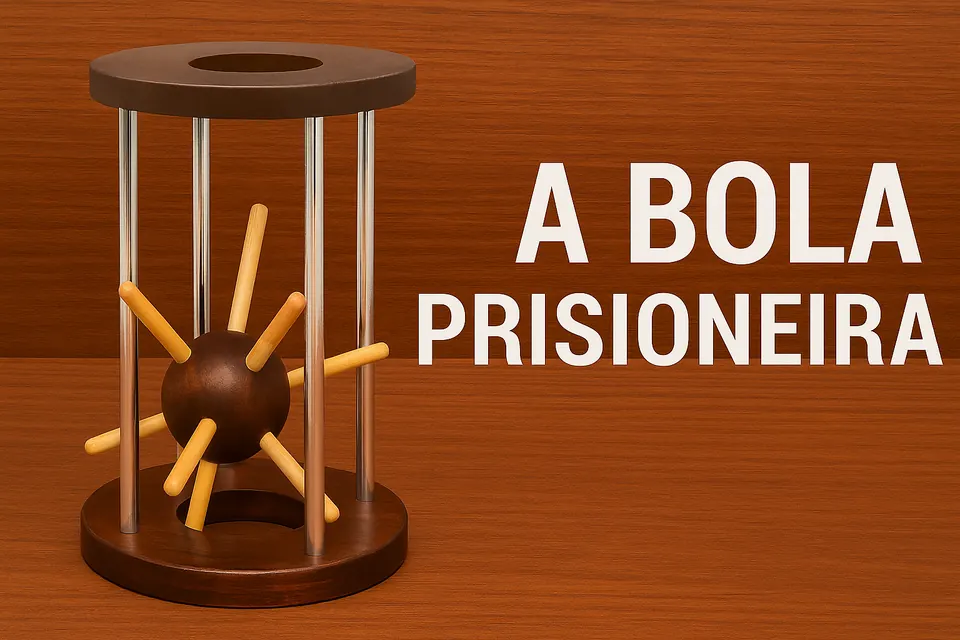

Bola Prisioneira
Enigma de libertação e percurso
Uma bola parece presa dentro da estrutura; o desafio é compreender as passagens e restrições do mecanismo.

O desafio
O que observar neste jogo
A aparência sugere uma prisão impossível, mas o mecanismo pode envolver alinhamento, rotação, passagem por uma abertura específica ou deslocamento de outra peça.
Há modelos em que a bola é removível e outros em que ela serve apenas como elemento móvel. Confirme o objetivo no exemplar ou na embalagem antes de apresentar a atividade.
Guia de ação
Como experimentar
- 1
Teste a mobilidade
Observe até onde a bola e cada componente conseguem se mover sem pressão.
- 2
Compare aberturas
Verifique dimensões, ângulos e posições em que a bola se aproxima da borda.
- 3
Procure alinhamentos
Gire ou incline a estrutura lentamente e veja se duas restrições deixam de atuar ao mesmo tempo.
- 4
Valide o objetivo
Se nenhum percurso físico for possível, não force. O enigma pode depender de outra peça ou não prever remoção total.
Possibilidades educativas
O que a atividade pode mobilizar
Análise de restrições
Distinguir movimentos possíveis, bloqueados e condicionais.
Geometria prática
Relacionar diâmetro, abertura, ângulo e orientação.
Ceticismo produtivo
Revisar a própria interpretação do objetivo quando os dados não a sustentam.
“Pode mobilizar” não significa “desenvolve automaticamente”. A experiência depende da proposta, da repetição, do diálogo e das condições de participação.
Mediação
Perguntas que mantêm o problema aberto
- A bola está presa pelo tamanho, pela posição ou por outro mecanismo?
- Que orientação maximiza o espaço disponível?
- Como saber se a hipótese de retirar a bola é compatível com a construção?
Participação e acessibilidade
Formas de adaptar sem retirar o desafio
- Use uma base acolchoada para permitir inclinação sem ruído ou deslizamento.
- Descreva as posições como em um relógio para facilitar orientação verbal.
- Permita investigação cooperativa, com uma pessoa manipulando e outra observando lateralmente.